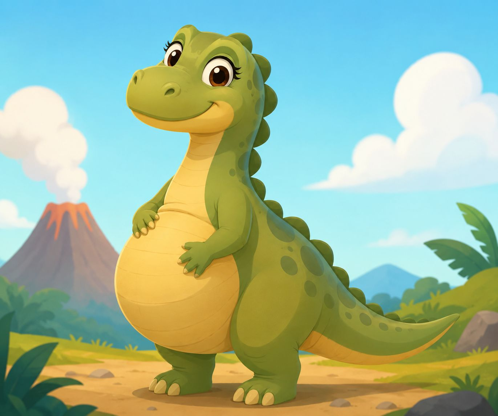
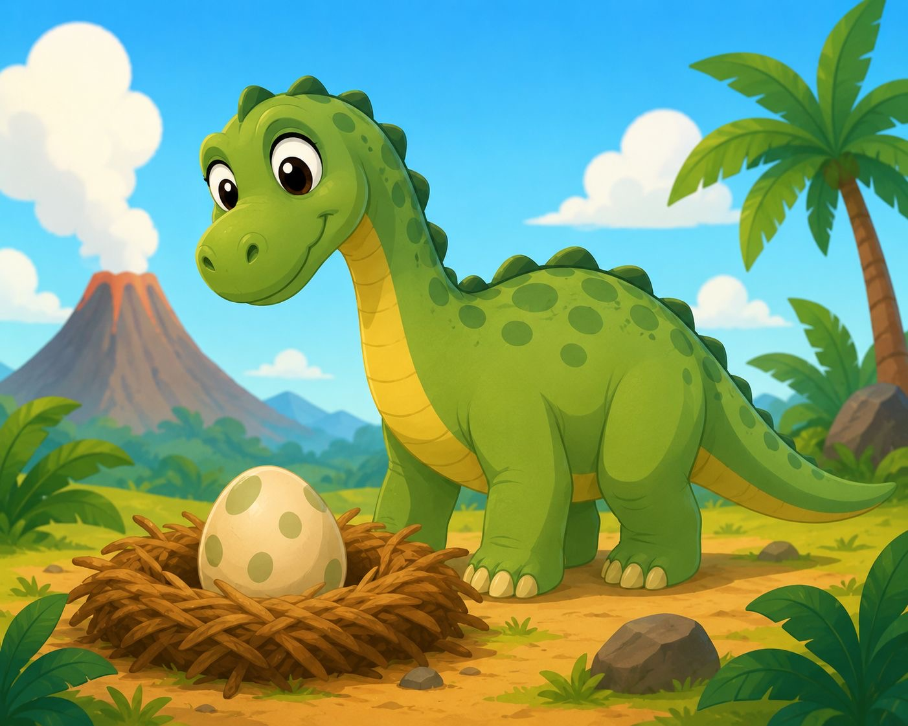

1.No todos eran gigantes
2.Algunos tenían plumas
3.El Tyranosaurus Rex no podían correr tan rápido
4.Los dinosaurios no corrían como en las películas
5.El cerebro de algunos era diminuto
6.Existieron por muchísimo tiempo
7.Las aves son dinosaurios
Los dinosaurios no se embarazaban como los mamíferos actuales. La mayoría ponía huevos, por lo que no desarrollaban a sus crías dentro de su cuerpo durante meses como ocurre en los humanos.

Las hembras producían huevos dentro de su organismo antes de ponerlos en un nido. Los científicos han encontrado fósiles de dinosaurios con huevos en su interior y también nidos fosilizados, lo que demuestra que muchos cuidaban a sus crías después de la eclosión.
